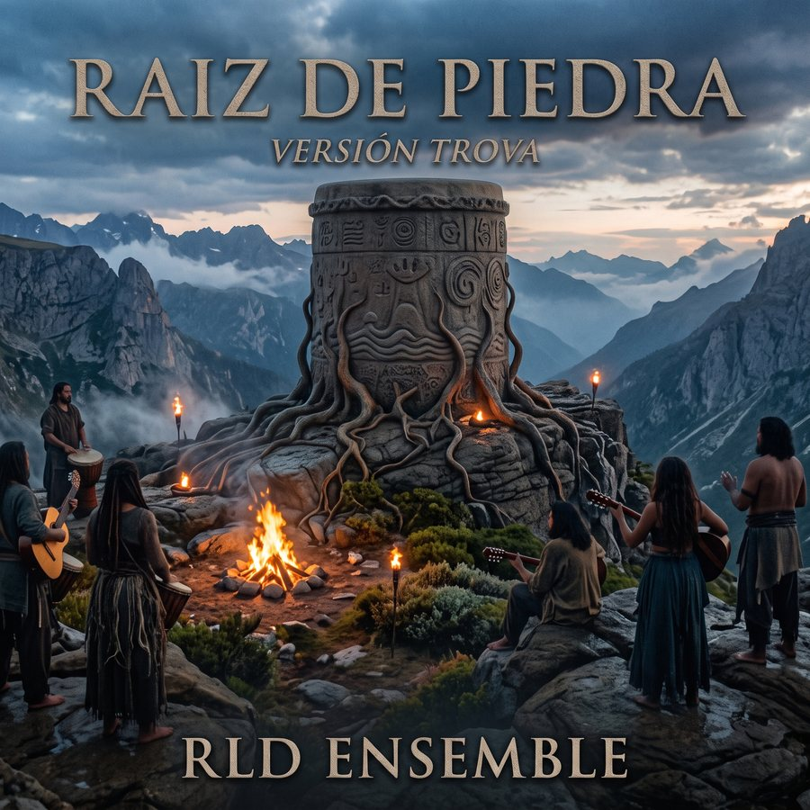
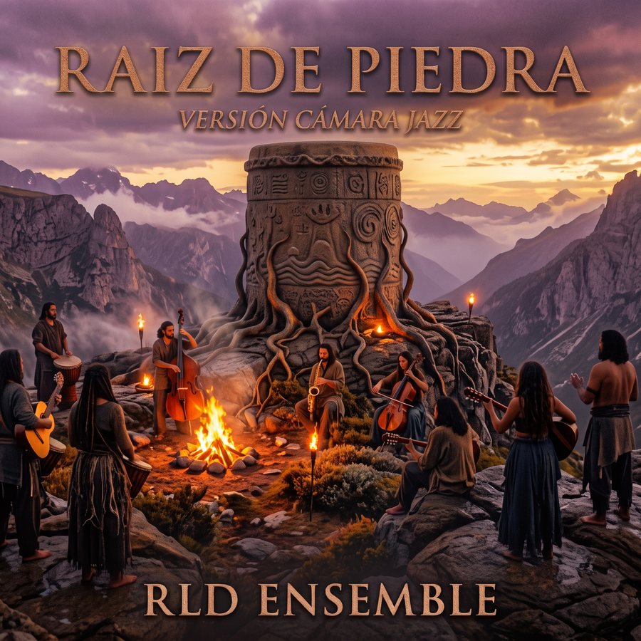

Tambor de Piedra · Álbum 02
Raíz de Piedra
La sierra lenca
Un álbum conceptual de 12 piezas sobre la memoria y la continuidad del pueblo lenca en el occidente de Honduras. El primer álbum miraba al mar garífuna; este asciende a la sierra.
El disco
NO ES UN DISCO ÉPICO
Sus canciones hablan desde primeras personas cambiantes — un nieto, una sobrina, una hija — que reciben una herencia sin estar del todo seguras de cómo nombrarla. La guerra de 1537 ocupa el centro del recorrido, pero el clímax no es la batalla: es la permanencia de un pueblo que continuó sembrando durante cinco siglos.
El centro es un cantautor: voz cercana y seca, guitarra de nylon punteada. Todo lo demás — contrabajo, Rhodes, violín eléctrico, piedra, madera, barro, ocarina y un coro sin palabras — crece desde ese núcleo solo cuando el texto lo pide.
Care, Cerquín, Potón y Lenca: un mosaico de pueblos con sus propios caciques, no un reino unificado.
La resistencia en el Peñol de Cerquín. Sobre su muerte, dos relatos que siguen en debate.
El Guancasco, la compostura, el barro de La Campa: prácticas repetidas más que monumentos.
Dos versiones
UN MISMO ÁLBUM, DOS LANZAMIENTOS
Las mismas letras y el mismo orden de canciones. En ambas, el ensamble crece desde el cantautor y nunca lo sepulta.
La canción en su forma más desnuda: voz, guitarra de nylon y capas mínimas. Íntimo, seco, cercano — en la línea de la nueva trova cubana y la nueva canción chilena.
MASTERIZADA ✓

Contrabajo, Rhodes de voicings abiertos, violín como contravoz y pulso libre. Sonido espacioso, cercano a la estética ECM, Gismonti y Saluzzi.
MASTERIZADA ✓
Tracklist
LAS CANCIONES
Duraciones de la versión jazz de cámara.
Escuchar en